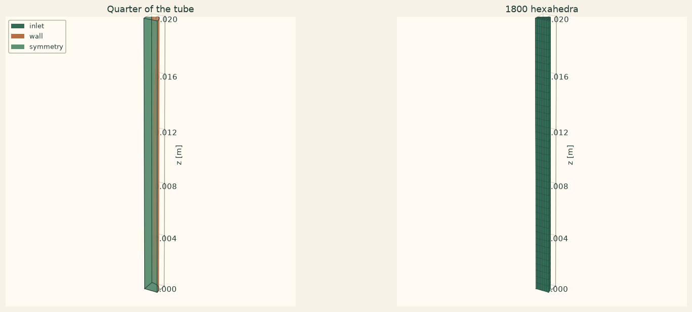

Docs › Examples › Heat transfer in laminar flow through a circular tube
Forced convection · 3D
Heat transfer in laminar flow through a circular tube
Oil flowing through a heated tube, where the Nusselt number falls along the thermal entry length to 3.66 for a fixed wall temperature and 4.36 for a fixed wall heat flux.
Run locally with OneSimulation. The example downloads are free. Running them requires an activated runtime. OneSimulation 1.0 · CPython 3.13 on macOS (Apple Silicon), Ubuntu 22.04 (x86-64), and Windows x64. Installation and activation · View pilot plans. Scope of the reference checks.

What it computes
OneSimulation solves the laminar 3D flow in a quarter tube read from STEP with Taylor-Hood elements on swept hexahedra and lets it drive the convective heat transfer one way, once with a fixed wall temperature and once with a fixed wall heat flux. Local Nusselt numbers follow from bulk temperatures at 39 stations; the entry length is compared with the Graetz series. The script that builds the STEP file comes with the notebook.
What it checks
The fully developed Nusselt numbers are 3.635 for the fixed wall temperature (-0.6 % against 3.657) and 4.378 for the fixed heat flux (+0.3 % against 48/11), the local values follow the Graetz solution along the entry length, and the bulk temperature rise matches the energy balance to 0.4 %.
Geometry
The notebook starts at the import of the CAD file laminar_tube_heat_transfer_graetz.step: STEP (AP242), readable by any CAD program, with the names of the faces that the boundary conditions use. Put it next to the notebook.


The geometry script
The script laminar_tube_heat_transfer_graetz_geometry.py builds the geometry with the CAD objects of OneSimulation and writes the file. Change a dimension there, run it, and run the notebook again.
"""Geometry of the OneSimulation example "Heat transfer in laminar flow through a circular tube".
Builds one quarter of a circular tube of 2 mm diameter and 20 mm length with the CAD objects of
OneSimulation and writes laminar_tube_heat_transfer_graetz.step. The flow runs along z; the faces
form the groups inlet (z = 0), outlet (z = 20 mm), wall and symmetry (the two cut planes through
the axis).
"""
from onesim.cad.d3 import Box, Cylinder
radius, length = 1.0e-3, 20.0e-3
tube = Cylinder(radius=radius, length=length).named("tube") & Box(
length=radius, width=radius, height=length
).named("cut")
faces = tube.boundaries
tube.grouped(
inlet=tube.select(faces=lambda face: face.id in ("tube.bottom", "cut.z_min")),
outlet=tube.select(faces=lambda face: face.id in ("tube.top", "cut.z_max")),
wall=faces["tube.outer_wall"],
symmetry=faces["cut.x_min"] | faces["cut.y_min"],
).save("laminar_tube_heat_transfer_graetz.step")The notebook
The complete notebook, cell by cell. Run it to produce the figures and the comparison printout.
Oil (density 900 kg/m³, viscosity 0.01 Pa s, conductivity 0.15 W/(m K), heat capacity 1500 J/(kg K), so the Prandtl number is 100) flows through a tube of diameter \(D=2\) mm at the Reynolds number \(Re=1\); the Péclet number is \(Pe=Re\,Pr=100\). The oil enters with a fully developed velocity profile at 300 K. Two thermal cases are computed:
- the wall is held at \(T_w=310\) K (uniform wall temperature),
- the wall takes up a uniform heat flux \(q=50\) W/m² (uniform heat flux).
The flow obeys the steady Navier-Stokes equations and carries the heat,
The local heat transfer coefficient is \(h=q_w/(T_w-T_b)\) with the bulk (mixing-cup) temperature \(T_b=\int uT\,dA/\int u\,dA\), and the Nusselt number \(Nu=hD/k\).
One quarter of the tube comes from the CAD file laminar_tube_heat_transfer_graetz.step with the face groups inlet, outlet, wall and symmetry; the script laminar_tube_heat_transfer_graetz_geometry.py builds it with the CAD objects of OneSimulation.
| face | flow | heat |
|---|---|---|
inlet | fully developed profile, \(Re=1\) | \(T=300\) K (\(T_w\) on the outermost 1 % of the radius, where the wall condition meets it) |
outlet | traction free | no conduction |
wall | no slip | \(T=T_w\) or heat flux \(q\) |
symmetry | free slip | no flux |
Reference. For fully developed laminar flow the thermal entry problem was solved by Graetz; with the eigenvalues \(\lambda_n\) and constants \(G_n\) tabulated by Shah and London (Laminar Flow Forced Convection in Ducts, 1978) the local Nusselt number for the uniform wall temperature is
which tends to \(\lambda_1^2/2=3.657\). For the uniform heat flux the fully developed value is \(48/11=4.364\) (Incropera et al., Fundamentals of Heat and Mass Transfer, Sec. 8.4).
import numpy as np
from onesim.cad.d2 import Plane
from onesim.cad.exchange import load
from onesim.materials import IsotropicSolid, NewtonianFluid
from onesim.meshing import SweepMesher
from onesim.numerics import Numerics
from onesim.numerics.fem import FiniteElement, GalerkinAdvection, Lagrange, TaylorHood
from onesim.numerics.linear import SparseDirect
from onesim.numerics.nonlinear import Newton
from onesim.physics.heat_transfer import (
ConvectiveHeatTransfer,
FixedTemperature,
HeatFlux,
)
from onesim.physics.hydrodynamics import (
FixedVelocity,
FlowTraction,
FreeSlipLaw,
IncompressibleNavierStokes,
NoSlipWall,
WallShear,
fully_developed_inflow,
)
from onesim.results.derived import derived_field
from onesim.results.integration import integrate_plane
from onesim.results.sampling import field_function
from onesim.simulation import Problem, Simulation
from onesim.simulation.initial_conditions import InitialValue
from onesim.visualization import plots, theme
theme.set()Geometry and mesh
SweepMesher meshes the inlet with quadrilaterals and sweeps them along the tube in 40 layers.
tube = load("laminar_tube_heat_transfer_graetz.step")
faces = tube.boundaries
radius, length = tube.size[0], tube.size[2]
diameter = 2 * radius
mesh = SweepMesher(source=faces.inlet, target_size=radius / 7, layers=40).generate(tube)
view = plots.Camera(elevation=25, azimuth=-60)
fig = plots.figure(1, 2, size=(14, 5.5))
plots.geometry(
tube,
selection={"inlet": faces.inlet, "wall": faces.wall, "symmetry": faces.symmetry},
labels=False,
camera=view,
title="Quarter of the tube",
ax=fig[0],
)
plots.mesh(
mesh,
groups=("all",),
legend=False,
camera=view,
title=f"{mesh.cell_count} hexahedra",
ax=fig[1],
)
plots.show()Flow
The steady Navier-Stokes equations with Taylor-Hood elements; the inlet carries the fully developed profile for the mean velocity at \(Re=1\).
oil = NewtonianFluid(density=900.0, dynamic_viscosity=0.01)
conductivity, capacity = 0.15, 1500.0
mean_speed = 1.0 * oil.dynamic_viscosity / (oil.density * diameter)
flow = IncompressibleNavierStokes(domain=tube.volume, material=oil)
velocity = (
Simulation(
problem=Problem(
name="Tube flow",
geometry=tube,
physics=(flow,),
boundary_conditions=(
FixedVelocity(
boundary=faces.inlet,
physics=flow,
value=fully_developed_inflow(
mesh, faces.inlet, mean_velocity=mean_speed, no_slip=faces.wall
),
),
FlowTraction(
boundary=faces.outlet,
physics=flow,
value=lambda x, y, z: np.zeros((len(x), 3)),
),
NoSlipWall(boundary=faces.wall, physics=flow),
WallShear(boundary=faces.symmetry, physics=flow, law=FreeSlipLaw()),
),
initial_conditions=(InitialValue(flow.velocity, (0.0, 0.0, 0.0)),),
),
mesh=mesh,
numerics=Numerics(
spatial=FiniteElement(element=TaylorHood()),
initial_guess={flow.velocity: (0.0, 0.0, 0.0)},
nonlinear_solver=Newton(
linear_solver=SparseDirect(),
absolute_tolerance=1e-14,
relative_tolerance=1e-10,
),
),
)
.solve_stationary()
.field(flow.velocity)
)Heat transfer
The solved velocity drives the heat transport one way (constant properties). The two wall conditions are two problems on the same mesh.
oil_heat = IsotropicSolid(
density=oil.density,
specific_heat_capacity=capacity,
thermal_conductivity=conductivity,
youngs_modulus=1.0,
poisson_ratio=0.3,
thermal_expansion_coefficient=0.0,
)
inlet_temperature, wall_temperature, flux = 300.0, 310.0, 50.0
cases = {"uniform wall temperature": FixedTemperature, "uniform heat flux": HeatFlux}
heat = {
name: ConvectiveHeatTransfer(
domain=tube.volume, material=oil_heat, velocity=field_function(velocity)
)
for name in cases
}
temperatures = {
name: Simulation(
problem=Problem(
name=f"Tube heat transfer, {name}",
geometry=tube,
physics=(model,),
boundary_conditions=(
FixedTemperature(
boundary=faces.inlet,
physics=model,
value=(
inlet_temperature
if name == "uniform heat flux"
else lambda x, y, z: np.where(
np.hypot(x, y) > 0.99 * radius,
wall_temperature,
inlet_temperature,
)
),
),
(
FixedTemperature(
boundary=faces.wall, physics=model, value=wall_temperature
)
if name == "uniform wall temperature"
else HeatFlux(boundary=faces.wall, physics=model, value=-flux)
),
HeatFlux(
boundary=faces.outlet | faces.symmetry, physics=model, value=0.0
),
),
),
mesh=mesh,
numerics=Numerics(
spatial=FiniteElement(
element=Lagrange(order=2), convection=GalerkinAdvection()
),
linear_solver=SparseDirect(),
),
)
.solve_stationary()
.field(model.temperature)
for name, model in heat.items()
}Results
The bulk temperature at 39 stations along the tube, the mean wall temperature for the heat-flux case (extrapolated linearly from 1 % and 0.5 % inside the wall, where the faceted mesh lies), and from them the local Nusselt numbers. For the fixed wall temperature the wall heat flux follows from the energy balance, \(q_w=\rho c_p u_m (D/4)\,dT_b/dx\); its fully developed value comes from a straight-line fit of \(\ln(T_w-T_b)\) over the last 40 % of the tube.
stations = np.linspace(0.5e-3, length - 0.5e-3, 39)
plane = lambda z: Plane(origin=(0, 0, z), normal=(0, 0, 1))
carried = lambda T: derived_field(
velocity,
lambda u, points: u[:, 2] * np.ravel(T.evaluate(points)),
name="enthalpy_flux",
unit="K*m/s",
)
bulk = {
name: np.array(
[
integrate_plane(carried(T), plane(z)).value
/ integrate_plane(velocity, plane(z), normal_component=True).value
for z in stations
]
)
for name, T in temperatures.items()
}
angle = np.linspace(0.02, np.pi / 2 - 0.02, 12)
near_wall = (
lambda r, z: temperatures["uniform heat flux"]
.evaluate(
np.column_stack((r * np.cos(angle), r * np.sin(angle), np.full_like(angle, z)))
)
.mean()
)
wall = np.array(
[2 * near_wall(0.995 * radius, z) - near_wall(0.99 * radius, z) for z in stations]
)
nusselt = {
"uniform wall temperature": -oil.density
* capacity
* mean_speed
* diameter**2
/ (4 * conductivity)
* np.gradient(
np.log(wall_temperature - bulk["uniform wall temperature"]), stations
),
"uniform heat flux": flux
* diameter
/ (conductivity * (wall - bulk["uniform heat flux"])),
}
limits = {"uniform wall temperature": 3.657, "uniform heat flux": 48 / 11}
developed = stations > 0.6 * length
print(
f"Re = 1, Pr = {oil.dynamic_viscosity * capacity / conductivity:.0f}, Pe = {oil.density * capacity * mean_speed * diameter / conductivity:.0f}"
)
developed_values = {
"uniform wall temperature": -oil.density
* capacity
* mean_speed
* diameter**2
/ (4 * conductivity)
* np.polyfit(
stations[developed],
np.log(wall_temperature - bulk["uniform wall temperature"][developed]),
1,
)[0],
"uniform heat flux": np.median(nusselt["uniform heat flux"][developed]),
}
for name, value in developed_values.items():
print(
f"{name:25s} fully developed Nu over the last 40 % of the tube: {value:.4f}, classical value {limits[name]:.4f}: "
f"{100 * (value / limits[name] - 1):+.2f} %"
)
rise = bulk["uniform heat flux"][-1] - bulk["uniform heat flux"][0]
expected = (
flux
* np.pi
* diameter
* (stations[-1] - stations[0])
/ (oil.density * capacity * mean_speed * np.pi * diameter**2 / 4)
)
print(
f"energy balance, heat-flux case: bulk temperature rise {rise:.4f} K, q P L / (m c_p) = {expected:.4f} K ({100 * (rise / expected - 1):+.2f} %)"
)Figure
The temperature over the cross-section two diameters from the inlet for the fixed wall temperature, and the local Nusselt numbers along the tube against the Graetz solution and the two fully developed values.
eigenvalues, constants = np.array(
[2.7044, 6.6790, 10.6734, 14.6711, 18.6699]
), np.array([0.7488, 0.5438, 0.4629, 0.4154, 0.3829])
peclet = oil.density * capacity * mean_speed * diameter / conductivity
graetz = lambda x: (
constants * np.exp(-2 * eigenvalues**2 * x[:, None] / (diameter * peclet))
).sum(axis=1) / (
2
* (
constants
/ eigenvalues**2
* np.exp(-2 * eigenvalues**2 * x[:, None] / (diameter * peclet))
).sum(axis=1)
)
fine = np.linspace(0.4e-3, length, 300)
fig = plots.figure(layout=[["field", "nusselt", "nusselt"]], size=(18, 6))
plots.section(
temperatures["uniform wall temperature"],
plane=Plane(origin=(0, 0, 2 * diameter), normal=(0, 0, 1)),
limits=(300, 310),
contours=11,
subdivisions=2,
symmetry={"planes": [((1, 0, 0), (0, 0, 0)), ((0, 1, 0), (0, 0, 0))]},
label="T [K]",
xlabel="x [m]",
ylabel="y [m]",
title="Temperature across the tube at x = 2 D, wall at 310 K",
ax=fig["field"],
)
plots.line(
points={name: (stations / diameter, values) for name, values in nusselt.items()},
reference={"Graetz solution": (fine / diameter, graetz(fine))},
hlines={"3.66": 3.657, "4.36": 48 / 11},
ylimits=(3, 8),
xlabel="distance from the inlet x / D",
ylabel="local Nusselt number",
title="Thermal entry length",
ax=fig["nusselt"],
)
plots.show()Going further
Raise the Péclet number for a longer entry region, lengthen the tube in laminar_tube_heat_transfer_graetz_geometry.py, or let the viscosity fall with temperature and couple the heat back to the flow to see the profile distort.